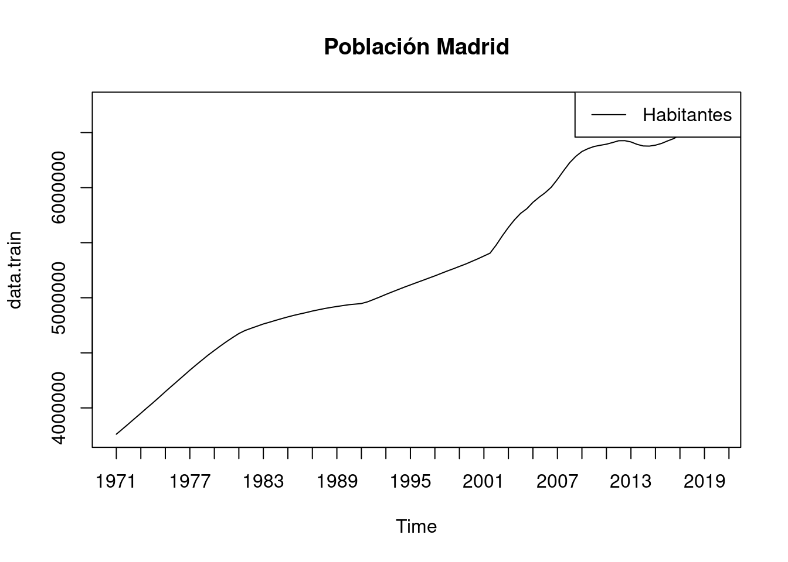
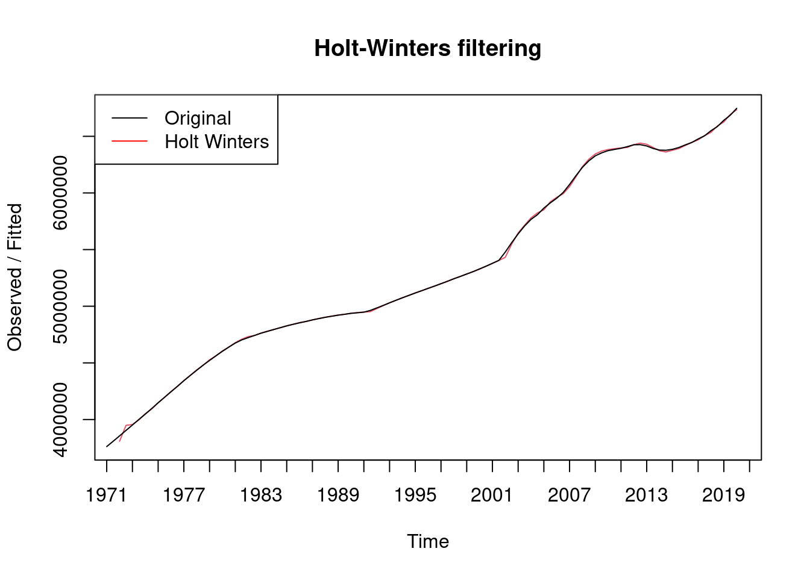
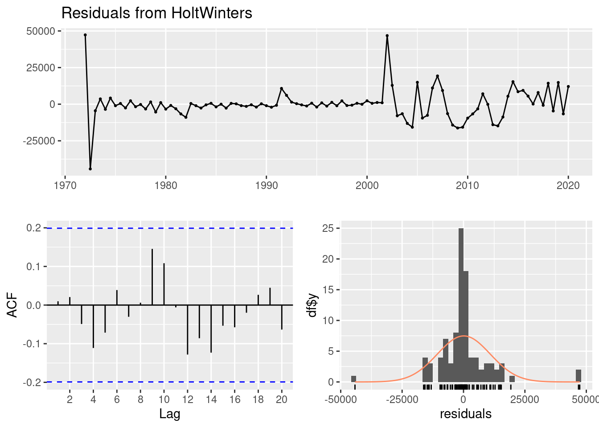
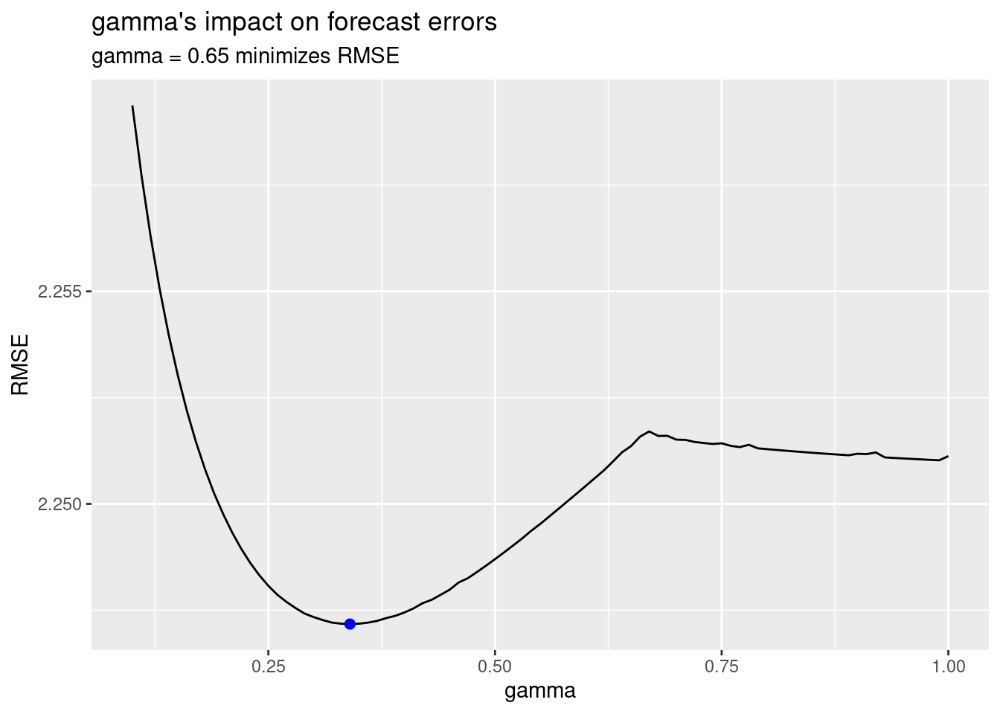
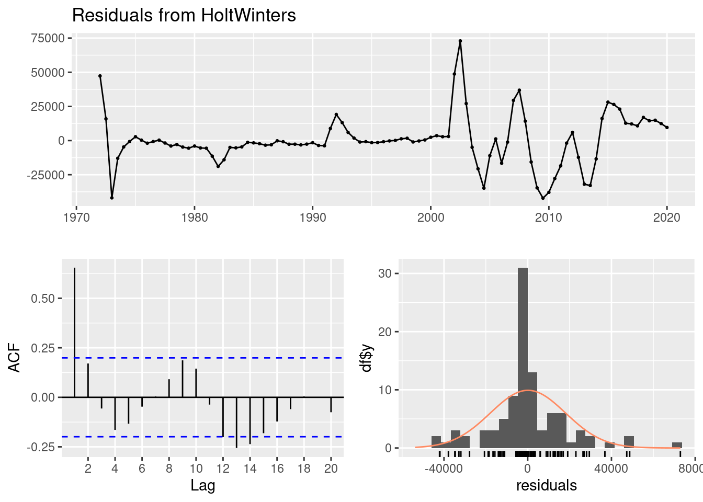
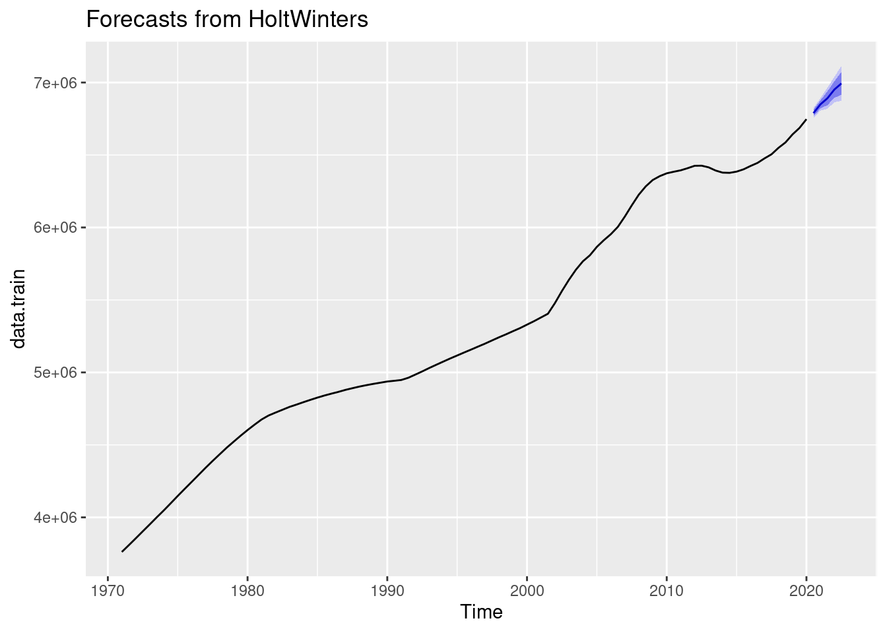

# Librerías
library(forecast) # para predecir observaciones futuras
library(ggplot2) # Nice plots
library(readxl) # Para leer excels
library(stats) # Para crear objetos tsSeries Temporales - Holt Winters: madrid_series
Introducción
En este notebook se va a exponer como llevar a cabo el análisis de una serie temporal mediante un modelo Holt Winters, esto es, un suavizado exponencial triple. Para ello se verá la teoría que sustenta este método y se mostrará un caso práctico con un conjunto de datos real.
Descripción del trabajo a realizar
Se pretende ajustar una serie temporal que contiene los habitantes de la Comunidad de Madrid mediante un modelo Holt Winters:
- Visualizar la serie para intuir su tendencia y estacionalidad.
- Razonar por qué es factible un modelo Holt-Winters (suavizado exponencial triple).
- Dividir la serie en Train/Test para poder evaluar después el modelo.
- Ajustar hiperparámetros e interpretar coeficientes.
dataset
En este cuaderno vamos a analizar el dataset llamado Madrid.xlsx. Este dataset presenta la población de la Comunidad de Madrid desde 1971 hasta 2022 con una periodicidad bianual (Enero y Julio). El objetivo será analizar dicha serie temporal mediante un modelo Holt-Winters (suavizado exponencial triple) .
Concretamente en este dataset tenemos las siguientes variables:
- Fecha: Fecha correspondiente.
- Pobl. Hombres: Fecha correspondiente.
- Pobl. Mujeres: Fecha correspondiente.
Análisis Exploratorio (EDA)
EDA viene del Inglés Exploratory Data Analysis y son los pasos relativos en los que se exploran las variables para tener una idea de que forma toma el dataset.
Cargar Librerías
Lo primero de todo vamos a cargar las librerías necesarias para ejecutar el resto del código del trabajo:
Lectura datos
Ahora cargamos los datos del excel correspondientes a la pestaña “Datos” y vemos si hay algún NA o algún valor igual a 0 en nuestro dataset. Vemos que no han ningún NA (missing value) en el dataset luego no será necesario realizar ninguna técnica para imputar los missing values o borrar observaciones.
Cargamos entonces el conjunto de datos:
data <- readxl::read_excel("../../../../files/madrid.xlsx",
sheet = "Datos", col_types = c(
"date",
"numeric", "numeric", "numeric"
)
)
data$Total <- data$`Pobl. Total`
data$H <- data$`Pobl. Hombres`
data$M <- data$`Pobl. Mujeres`sum(is.na(data))[1] 0Para tener una noción general que nos permita describir el conjunto con el que vamos a trabajar, podemos extraer su dimensión, el tipo de variables que contiene o qué valores toma cada una.
# Dimensión del conjunto de datos
dim(data)[1] 104 7# Tipo de variables que contiene
str(data)tibble [104 × 7] (S3: tbl_df/tbl/data.frame)
$ Fecha : POSIXct[1:104], format: "2022-07-01" "2022-01-01" ...
$ Pobl. Total : num [1:104] 6825005 6769373 6738361 6755828 6757042 ...
$ Pobl. Hombres: num [1:104] 3268934 3243712 3228906 3236830 3238421 ...
$ Pobl. Mujeres: num [1:104] 3556072 3525661 3509455 3518998 3518621 ...
$ Total : num [1:104] 6825005 6769373 6738361 6755828 6757042 ...
$ H : num [1:104] 3268934 3243712 3228906 3236830 3238421 ...
$ M : num [1:104] 3556072 3525661 3509455 3518998 3518621 ...Suavizado exponencial: Holt Winters
El suavizado exponencial es una técnica usada para analizar y suavizar datos de series temporales. De acuerdo con este método, las observaciones pasadas tienen pesos que disminuyen exponencialmente con el tiempo.
Sea la serie temporal \(\{x_t\}\), empezando en \(t=0\). Los datos suavizados se representan como: \[ s_0 = x_0 ;\quad s_t = \alpha x_{t} + (1-\alpha)s_{t-1},\quad t>0 \] con \(\alpha\) el factor de suavizado \(0<\alpha<1\).
Concretamente vamos a tratar los siguientes tipos de suavizado, (centrándonos en el último, Holt Winteres)
- Suavizado exponencial simple
- Suavizado exponencial doble (Holt-Linear)
- Suavizado exponencial triple (Holt-Winters)
Mientras que el suavizado exponencial simple se centra en suavizar la serie, el doble también intenta capturar la tendencia y el suavizado exponencial triple va un paso más allá al incorporar también la estacionalidad en los datos. Esto lo hace más adecuado para modelar series temporales con patrones estacionales claros.
Suavizado exponencial simple
La forma más simple de suavizado exponencial se da por la fórmula:
\[ s_0 = x_0 ;\quad s_t = \alpha x_{t} + (1-\alpha)s_{t-1},\quad t>0 \] con \(\alpha\) el factor de suavizado \(0<\alpha<1\).
En otras palabras, la serie suavizada es un promedio ponderado simple de la observación actual y la observación suavizada anterior.
El término “factor de suavizado” no es del todo preciso, ya que valores más grandes de \(\alpha\) reducen el nivel de suavizado, y en el caso límite con \(\alpha = 1\) la serie es simplemente la observación actual. Para valores cercanos a uno tiene menos efecto de suavizado y dan mayor peso a cambios recientes en los datos, mientras que para valores más cercanos a cero se tiene un mayor efecto de suavizado y son menos sensibles a cambios recientes.
Diferencia con medias móviles
A diferencia de otros métodos de suavizado, como el medias móviles, esta técnica no requiere que se haga un número mínimo de observaciones antes de que comience a dar la serie suavizada. Sin embargo, en la práctica, un “buen ajuste” no se logrará hasta que se hayan promediado varias muestras juntas; por ejemplo, una señal constante tomará aproximadamente \(3/\alpha\) etapas para alcanzar el \(95\%\) del valor real.
Esta forma simple de suavizado exponencial también se conoce como Exponentially Weighted Moving Average (EWMA). Técnicamente, también se puede clasificar como un modelo autoregresivo integrado de media móvil (ARIMA) (0,1,1) sin término constante.
Elección del valor de \(s_0\)
Elegir el valor inicial suavizado es crucial para una predicción precisa.
- Normalmente, el valor suavizado inicial $ s_0 $ se inicializa en $ s_0= x_0 $, la primera observación. (En caso de estacionalidad se debe elegir un valor inicial para cada periodo).
- Sin embargo, el enfoque previo puede llevar a pronósticos sesgados ya que pondera fuertemente la observación inicial. Para mitigar este problema, se recomienda usar el promedio de las observaciones durante (por ejemplo, 10 o más periodos) ese tiempo como la previsión inicial.
- Alternativamente, se pueden usar otros métodos para establecer el valor inicial, pero es importante tener en cuenta que la elección se vuelve más crítica con valores más pequeños del parámetro de suavizado $ $, ya que el pronóstico se vuelve más sensible al valor inicial suavizado.
Optimización (hiperparámeteros)
De esta manera tenemos el siguiente hiperparámetro denominándose : - \(\alpha\): factor de suavizado de la serie
Los parámetros desconocidos y los valores iniciales para cualquier método de suavizado exponencial pueden estimarse minimizando la suma de errores al cuadrado (SSE). Los errores se especifican como \(e_t=y_t-\hat{y}_{t\mid t-1}\) y lo que se busca es minimizar \(SSE=\sum e_t^2\).
A diferencia del caso de regresión (donde tenemos fórmulas para calcular directamente los coeficientes de regresión que minimizan el SSE), esto implica un problema de minimización no lineal y necesitamos utilizar una herramienta de optimización para realizarlo.”
Comparación con Medias Móviles
- Ambos tienen aproximadamente la misma distribución de error de pronóstico cuando \(\alpha = 2/(k + 1)\).
- Difieren en que el suavizado exponencial tiene en cuenta todos las observaciones pasados, mientras que las ** medias móviles** solo tiene en cuenta k observaciones pasadas.
- Computacionalmente hablando, también difieren en que el método de medias móviles requiere que se conserven las últimas \(k\) observaciones de datos, mientras que el suavizado exponencial solo necesita conservar el valor suavizado para el \(t\) más reciente.
Suavizado exponencial doble (Holt linear)
- El suavizado exponencial simple no funciona bien cuando hay una tendencia en los datos.
- En esos casos se usa el “suavizado exponencial doble” o “suavizado exponencial de segundo orden”, que es la aplicación recursiva de un filtro exponencial dos veces.
- La idea básica es introducir un término para tener en cuenta la posibilidad de que una serie muestre alguna forma de tendencia. Esta componente se actualiza mediante suavizado exponencial.
No se expondrán las fórmulas por simplicidad pero adicionalmente hay que ajustar otro hiperparámetro \(\beta\). De esta manera tenemos los siguientes hiperparámetros principales denominándose :
- $\alpha$: factor de suavizado de la serie
- $\beta$: factor de suavizado de tendencia
- $\gamma$: factor de suavizado de tendenciaSuavizado exponencial triple (Holt-Winters)
El suavizado exponencial triple aplica el suavizado exponencial tres veces. Fue sugerido por primera vez por el estudiante de Holt, Peter Winters, en 1960 después de leer un libro de procesamiento de señales de la década de 1940 sobre suavizado exponencial. Además de suavizar la serie y la tendencia, también considera la estacionalidad en los datos. (el suavizado doble no considera directamente la estacionalidad en los datos.)
De esta manera tenemos los siguientes hiperparámetros principales denominándose:
- $\alpha$: factor de suavizado de la serie
- $\beta$: factor de suavizado de tendencia
- $\gamma$: modelado de la estacionalidadDestacar que hay diferentes tipos de estacionalidad: multiplicativa y aditiva en la naturaleza, al igual que la suma y la multiplicación son operaciones básicas en matemáticas.
- Si cada mes de diciembre vendemos 10,000 apartamentos más que en noviembre, la estacionalidad es de naturaleza aditiva. -Sin embargo, si vendemos un 10% más de apartamentos en los meses de verano que en los meses de invierno, la estacionalidad es de naturaleza multiplicativa. La estacionalidad multiplicativa puede representarse como un factor constante, no como una cantidad absoluta.
Vamos a convertir los datos en objeto tipo ts (serie temporal).
# Convertir el vector en una serie temporal
pob_madrid <- ts(rev(data$Total), start = 1971, frequency = 2)
# creamos train/test partición
data.train <- window(pob_madrid, end = c(2020, 1))
data.test <- window(pob_madrid, start = c(2020, 2))# resumen numérico
summary(data.train) Min. 1st Qu. Median Mean 3rd Qu. Max.
3761320 4770010 5137372 5309478 6189477 6747068 # Visualizamos la serie
plot(data.train, main = "Población Madrid", xaxt = "n")
axis(1, at = seq(1971, 2022, 2)) # X-axis mostrar cada 2 años
legend("topright", legend = c("Habitantes"), col = "black", lty = 1)
A primera vista ya se parece ver que la serie NO tiene una componente estacional puesto que no hay picos de alta frecuencia dentro del año. Lo que si se observa es una tendencia creciente a lo largo de los años. Es por ello que el método de Holt-Winters parece adecuado (aunque la componente estacional parezca no tener efecto a simple vista veremos si ayuda a las estimaciones). Por la misma razón se ve desaconsejable usar un suavizado exponencial simple (el doble si se podría usar).
Es por ello que ejecutamos el modelo inicial, dejando al algoritmo que busque los valores óptimos de los hiperparámetros.
# Modelo inicial
mod1 <- HoltWinters(data.train)
# Visualizamos serie y serie ajustada por modelo
plot(mod1, xaxt = "n")
axis(1, at = seq(1971, 2022, 2)) # X-axis mostrar cada 2 años
legend("topleft", legend = c("Original", "Holt Winters"), col = c("black", "red"), lty = 1)
Se puede observar que R a través del comando HoltWinters crea una gráfica en color rojo, en donde se crean una nueva serie de datos que en teoría están muy cerca de los datos originales que son los de color negro. Es por ello que a priori el ajuste parece bueno. No obstante, se deben hacer las comprobaciones pertinentes.
mod1Holt-Winters exponential smoothing with trend and additive seasonal component.
Call:
HoltWinters(x = data.train)
Smoothing parameters:
alpha: 0.9750754
beta : 1
gamma: 0.5203231
Coefficients:
[,1]
a 6745956.5552
b 58544.5091
s1 -820.0966
s2 966.8428Esta salida corresponde a un modelo de suavizado exponencial de Holt-Winters con tendencia y componente estacional aditiva.
- Parámetros de Suavizado:
- alpha: El parámetro de suavizado para la nivel base es aproximadamente 0.970. Indica cuánto peso se le da a las observaciones más recientes para calcular el nivel base.
- beta: El parámetro de suavizado para la tendencia es 1, lo que sugiere que no se está considerando el suavizado para la tendencia en este modelo. Tiene mucha importancia la tendencia.
- gamma: El parámetro de suavizado para la componente estacional es 0.5, lo que indica un ligero énfasis en la suavización de la componente estacional (como ya habíamos comentado).
- Coeficientes:
- a: El nivel base es aproximadamente 67.45956 Representa el valor promedio de la serie temporal.
- b: La pendiente de la tendencia es alrededor de 58.544 Indica la tasa de cambio en la serie temporal.
- s1 a s12: Estos coeficientes representan los efectos estacionales para cada medio año. Ya vemos que toman unos valores de orden mucho menor a a o b lo que corrobora de nuevo que la componente estacional no es de vital importancia analizando la población.
RESIDUOS
Veamos que tal ha ajustado el modelo la serie (examinando los residuos). Recordar que el modelo ajustado de una serie temporal debe presentar unos residuos.
- Incorrelados: Es decir, p_val de Ljung-Box test debe ser mayor que 0.05.
- Media cero: Para asegurarnos que son aleatorios dichos errores ( y no tienen un sesgo).
- Homocedasticidad: Varianza constante. Se puede ver gráficamente.
- Normalidad: Es una buena propiedad verificar que los residuos siguen una distribución aproximadamente normal.
checkresiduals(mod1)
Ljung-Box test
data: Residuals from HoltWinters
Q* = 1.5725, df = 4, p-value = 0.8137
Model df: 0. Total lags used: 4- El Ljung-Box test tiene un p_val>0.05 luego aceptamos H0 y asumimos que los errores son independientes.
- Gráfico Residuos vs. Índice: Este gráfico muestra los residuos en función del índice de las observaciones. Idealmente, los residuos deberían estar dispersos alrededor de cero sin ningún patrón discernible (parece que si lo están).
- Gráfico Autocorrelación de Residuos: muestra la autocorrelación de los residuos a diferentes rezagos. Se espera que los residuos no estén correlacionados entre sí, lo que se refleja en que los puntos estén dentro de las bandas de confianza.
- Histograma de Residuos: Muestra la distribución de los residuos. Si los residuos se distribuyen normalmente alrededor de cero, el histograma debería parecerse a una distribución normal. En este caso muestra varias colas muy largas pero no parece un problema muy grande ya que el resto de hipótesis las pasa.
En resumen podemos estar satisfechos con el análisis de residuos, aunque no muestran el comportamiento esperable perfectamente, se puede aproximar. Esto indicará que el ajuste no será 100% perfecto.
Predicción Adicionalmente, se va a llevar a cabo una predicción sobre las observaciones sustraídas y se va a comparar con los valores reales a ver que efectividad tiene. Concretamente se va a hacer para los 5 meses posteriores. Comentar que cuanto más grande sea el test data, peor serán las métricas de la predicción, puesto que es muy difícil predecir en un periodo alejado del tiempo.
Vamos a mostrar ahora:
- ME: Mean Error
- RMSE: Root Mean Squared Error
- MAE**: Mean Absolute Error
- MPE: Mean Percentage Error
- MAPE: Mean Absolute Percentage Error
- MASE: Mean Absolute Scaled Error
- ACF1: Autocorrelation of errors at lag 1.
# Predecir los 7 meses siguientes
data.f1 <- forecast(mod1, h = 5)
# check accuracy
forecast::accuracy(data.f1, data.test) ME RMSE MAE MPE MAPE MASE
Training set 116.6525 10700.27 6217.522 0.00130045 0.1164939 0.09955876
Test set -152362.9617 165703.26 152362.962 -2.24901570 2.2490157 2.43972858
ACF1 Theil's U
Training set 0.009807262 NA
Test set 0.410931633 5.570415En el conjunto de datos de test vemos que el MPE y el MAPE muestran alrededor de un 2.2% lo cual es buen indicador. Podemos repetir el estudio con ARIMA para ver si obtenemos cosas coherentes.
NOTA IMPORTANTE: No siempre es importante que la serie prediga bien los valores. Por ejemplo, una empresa dedicada a la compra de petróleo en crudo puede estar más interesada en saber si la tendencia los meses siguientes será decreciente/creciente, para saber si la actualidad es buen momento para comprar petróleo. Es por ello que los análisis se centran más en contrastes de hipótesis.
Hyperparameter tunning
Aunque en este notebook en la función Holt.Wintersse han dejado los parámetros alpha, betay gamma autoajustarse, un enfoque alternativo podría ser establecer una rejilla de valores creando diferentes modelos con diferentes valores y comparando el MPE y el MAPE para ver que modelo tiene mejores métricas. Se tomarían como adecuados los parámetros del modelo con mejores métricas.
Veamos un ejemplo, vamos a buscar el gamma óptimo.
# Rejilla de gammas
gamma <- seq(0.1, 1, 0.01)
# Inicializamos
RMSE <- NA
# Bucle que analiza los modelos con todos los gammas propuestos (autoajustando el resto de hiperparámetros)
for (i in seq_along(gamma)) {
mod1.bucle <- HoltWinters(data.train, gamma = gamma[i], seasonal = "additive")
future <- forecast(mod1.bucle, h = 5)
RMSE[i] <- accuracy(future, data.test)[2, 5]
}
# Copiamos el RMSE de todos
error <- data.frame(gamma, RMSE)
# Buscamos el mínimo
minimum <- error[which(error$RMSE == min(error$RMSE)), ]
ggplot(error, aes(gamma, RMSE)) +
geom_line() +
geom_point(data = minimum, color = "blue", size = 2) +
ggtitle("gamma's impact on forecast errors",
subtitle = "gamma = 0.65 minimizes RMSE"
)
Si actualizamos nuestro modelo con este parámetro “óptimo” de gamma, observamos que reducimos nuestro MAPE baja 1.85%. Esto representa una mejora pequeña, pero a menudo las mejoras pequeñas pueden tener grandes implicaciones comerciales. Sería aconsejable analizar si dicha mejora se ha producido también en otras métricas.
Veamos concretamente las métricas:
mod1.bucle <- HoltWinters(data.train, alpha = 0.34, seasonal = "additive")
future <- forecast(mod1.bucle, h = 5)
accuracy(future, data.test) ME RMSE MAE MPE MAPE MASE
Training set 111.1714 17874.43 11541.7 -3.463583e-06 0.2090477 0.1848127
Test set -125852.8534 137716.44 125852.9 -1.857896e+00 1.8578957 2.0152326
ACF1 Theil's U
Training set 0.6544554 NA
Test set 0.3905034 4.642285checkresiduals(mod1.bucle)
Ljung-Box test
data: Residuals from HoltWinters
Q* = 48.913, df = 4, p-value = 6.089e-10
Model df: 0. Total lags used: 4Este modelo parece tener mejores métricas que el encontrado de manera automática. Vamos a graficarlo a ver que las predicciones futuras:
autoplot(future)
Conclusión
En este notebook se ha explorado como llevar a cabo un Análisis de una serie temporal mediante un modelo de Holt Winters, las hipótesis que debe cumplir el ajuste para considerarlo como bueno y los aspectos a tener en cuenta durante el proceso de modelización.